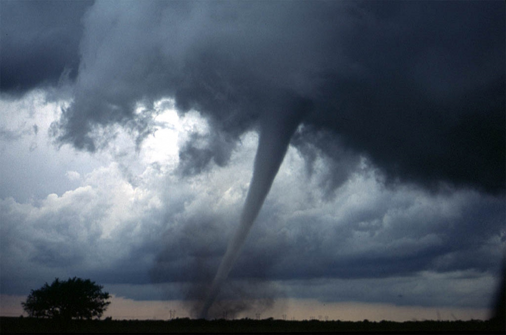
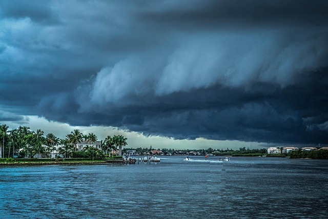
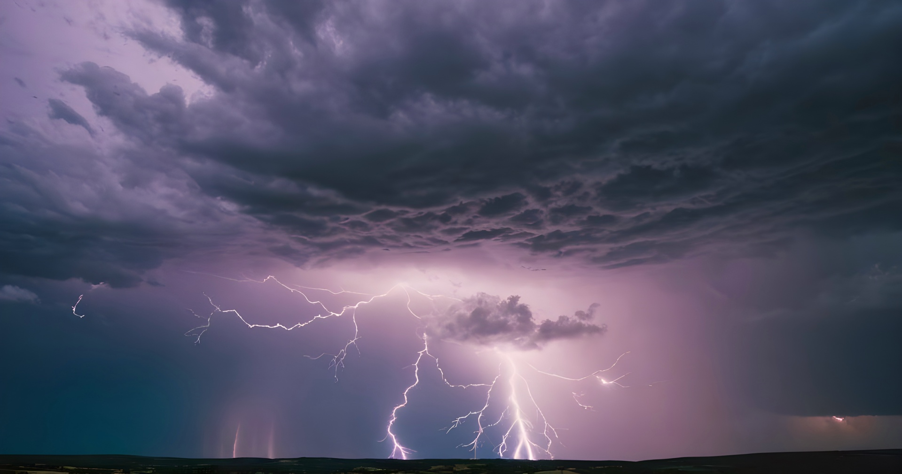
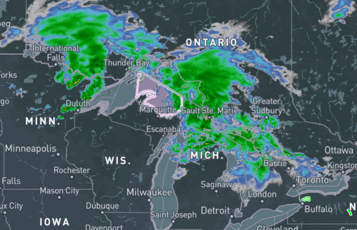
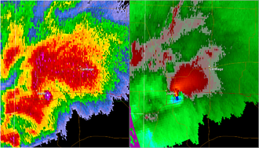

Types of Extreme Weather
Extreme weather is what happens when the atmosphere pushes its limits—producing powerful events like tornadoes, derechos, and hurricanes that can reshape communities and landscapes. These are just a few examples of the many extreme weather events our planet can create, and there are countless others worth exploring as you dive deeper into the wild world of weather.
Tornadoes

Tornadoes are fast-spinning columns of air that form inside powerful thunderstorms when warm, moist air rises quickly and meets cooler, drier air. This clash can create a rotating updraft, and if that rotation tightens, it can descend toward the ground, and a tornado can form. They can move unpredictably, bringing intense winds with them.
Hurricanes

Hurricanes are large, rotating storms that form over warm ocean water when rising moist air creates a strong low-pressure system. As the system organizes, it begins to spin and intensify, producing powerful winds, heavy rain, and coastal storm surge. Because they draw energy from warm seas, hurricanes can grow into massive, long-lasting systems capable of causing widespread impact.
Derechos

Derechos are long-lasting windstorms that develop from fast-moving lines of thunderstorms. When these storms surge forward, they create powerful straight-line winds that can travel hundreds of miles and cause damage similar to a tornado—but in one broad direction instead of a rotating path. Derechos are less common but can be incredibly destructive when they form.
Statistics
Tornadoes Per Year (USA)
1200
Recorded Hurricanes
972
Typical Derecho Windspeeds
58-130 mph
How to Read a Weather Radar

Weather radar sends out bursts of energy that bounce off raindrops, snow, or hail and return to the radar site. The strength of that returned signal is shown as colors on the map: greens usually mean lighter rain, yellows and oranges show heavier precipitation, and reds or purples can point to very heavy rain or hail. These color patterns help you quickly see where storms are developing and how strong they might be.
Radar images also reveal important storm features based on their shape and movement. A curved or hook-like pattern can signal rotation inside a thunderstorm, while a bow-shaped line often indicates strong straight-line winds pushing ahead of the storm. Radar can also estimate wind direction and speed, helping meteorologists spot hazards like downbursts or strengthening storm cells. Recognizing these patterns makes radar a powerful tool for understanding severe weather.
